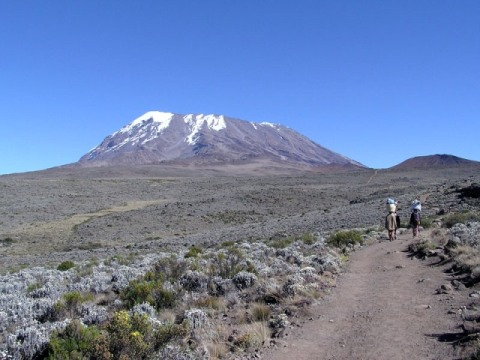

Kilimandžáro
Kilimandžáro je ľadom pokrytý horský masÃv, tvorený troma stratovulkánmi - Kibo (5 895 m), Mawenzi (5 149 m) a Shira (3 962 m), nachádzajúci sa na územà Tanzánie a ÄiastoÄne Kene. Masajský názov hory je Oldoinyo Oibor - biela hora, svahilský Kilima Njaro - svietiaca hora. Uhuru, nachádzajúci sa na kráteri Kibo je najvyÅ¡Å¡Ã vrch Afriky.
Aj keÄ je sopka považovaná za neaktÃvnu , z krátera Kibo unikajú sopeÄné plyny a vedci zistili, že v roku 2003 sa magma nachádzala len 400 m pod kráterom. Preto existujú obavy, že môže nastaÅ¥ kolaps, podobný výbuchu Saint Helens v roku 1980.
